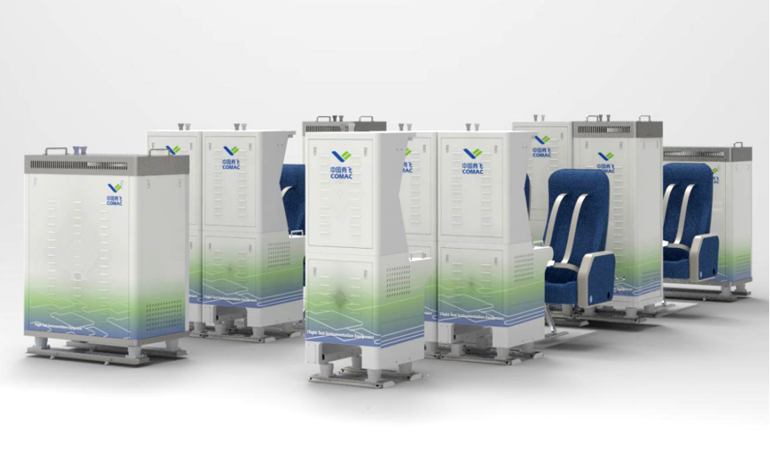

Human–AI Collaboration
Human–AI teaming, shared control, and collaborative decision-making.
Human–AI teaming, shared control, and collaborative decision-making.
Cognition, multimodal interfaces, and interaction design.
Assistive navigation and inclusive interaction.
Generative design, engineering knowledge, and AI-supported design workflows.

Core contributor to an industry–university project designing the C919 high-altitude flight-test monitoring console and airborne test racks.
Dual-Driven Knowledge Representation and Reasoning for Complex Product Design: Experience and Design Rules
Questions, research ideas, or collaboration opportunities are welcome.